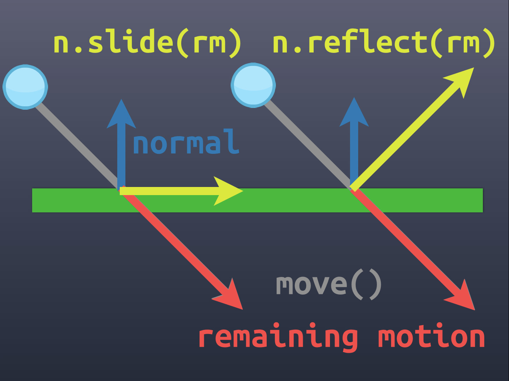

Building a Pause Menu - Part 4
The new design is a lock. Time to prototype.
Wonderspaces by Israel PalacioSkip Preface and Jump to the Post
Background
In my last post I went into detail about why I redesigned the Pause Menu for my Capability Test app, the design process, and what the final design was. The Capability Test app is a project where I experiment with code to test and create the building blocks for a game I’ve designed and will be building with the Godot engine.
I mentioned how important it is for the Pause Menu to reflect the feel of my game, as I wanted to lift the code and place it into my game once I begin building it. I also stated that designing was only the first step, and I would need to prototype the design to ensure it actually works before moving onto play-testing with other people.
In this post I talk about building that prototype.
First steps
As a reminder, here is the sketch of the design I was going to prototype:

Prototyping this would be relatively simple given the majority of the touch interface code had been built in a previous capability test. All I needed to do was to create a few walls, a Thumbnail utilising Godot’s collision system, hook up input gestures to move the Thumbnail, and apply Godot’s move-and-slide functionality to the Thumbnail.
I created a new scene for the new Pause Menu because I didn’t want to modify the code in the existing Pause Menu until I had confirmed the new design worked. I typically use this development approach because it ensures I focus purely on the code I’m developing; iterating fast, testing and tweaking until things are working to my satisfaction.
Looking at the Godot documentation I found in order to utilise move-and-slide the Thumbnail needed to be a KinematicBody2D and the walls should be StaticBody2D. My scene’s root node was of type Node and I added the Thumbnail node and two Wall nodes.
I used a CollisionShape2Das the collision shape on the Thumbnail, and a Polygon2D to create visual of the Thumb using a PoolVector2Array. Both were defined using the properties panel. I made the visual a solid white colour for now. I added a script to the Thumbnail node and pulled in my movement management code. At this stage I included both touch and mouse input because I wanted to explore how accurate Godot’s collision system was by providing precise input, as well as getting a feel for manipulating the Thumbnail with touch.
Similar to the Thumbnail node, I added CollisionShape2D and Polygon2D properties to define the collision and visual of the walls (again in white). I set the walls up carefully so the data defining them formed a perfectly angled corner into which the Thumbnail would fit. At this stage I was calculating coordinates and and inputting the data by hand just to get started.
Finally I added a node to draw debug visualisations. I wanted to visualise the drag vector as an arrow so I could see the origination point, size, and direction in which the Thumbnail was being dragged. For this I just made a Node2D with a script that exposed an array property called vectors expecting dictionary elements { vector, position }. I then implemented the _draw() method such that, on every frame, each element in vectors would be drawn as an arrow with a filled circle at its position and a length and direction defined by its vector. I updated the Thumbnail script to capture a reference to this debugVisualiser node using onready, then cleared and add the gesture vector while the gesture interaction was occurring.
It took a bit of jiggery-pokery to get the code working like I wanted (I’m no GDScript professional quite yet!), but before long I had the prototype up and running. I had to pinch myself to believe it, but the move and slide behaviour worked exactly as described right out of the box!
Here’s a video showing the prototype of the scene at this point. I’m moving the Thumbnail around with the mouse and have ensured the pointer is visible in the video for reference. You can observe when I’m click-and-dragging by the visualisation of the gesture vector as a purple arrow, and see how the Thumbnail slides along the walls right into the corner and stops.
Prototyping with Godot’s move-and-slide
It Works! Or Does it?
On the surface things appeared to be working perfectly. But as all good engineers know, you have to put your model under stress to ensure there aren’t any edge cases skulking about. Unfortunately for me, when I pushing my prototype to the limit I noticed a couple of such issues.
First, I discovered that when the gesture vector became sufficiently large, the Thumbnail would push right through the wall and appear on the other side. This isn’t normally an issue for Godot as the move-and-slide feature is typically used in platformer games where the velocity of objects is small enough and the problem never arises. However in my case I’m targeting a variety of devices with different form factors, so the gesture vector very easily reaches these large amounts.
I experimented with different wall sizes to see if I could prevent the issue. This is when I noticed the second issue; when the gesture vector was sufficiently large and the wall was sufficiently thick, the Thumbnail would slowly intrude into the wall.
Issue showcase. I moved the wall visual back from the CollisionShape2D to highlight the intrusion effect.
For my design I want the walls to form an impervious boundary for the Thumbnail, not be soft and squishy like memory foam.
Building a Bespoke Move and Slide
Move and Slide isn’t a particularly difficult problem to solve, it’s just a bit of vector geometry. There’s plenty of documented examples of how it works on the web. Personally I think this KinematicBody2D Collisions Done Right page from Kids Can Code explains it best. Here’s a reference diagram from that post:
Kids Can Code)">
Because I couldn’t get Godot’s implementation working for me with my own use case, my only way forward would be to build my own implementation. Vector geometry isn’t difficult to codify, so why not? Because I was restricting my walls to be convex shapes by design, there would be a maximum of 2 collisions to detect. This didn’t seem like too much work for GDScript so it should be performant enough.
I simplified my model so that I could focus on the math, starting by determining when a gesture vector positioned at the centre of the wall geometry would collide with a wall edge. After several failed attempts at trying to work this out in my head, I decided I needed to visualise what was going on. I extended my debugVisualiser node to draw lines (with circle terminators), points, and text.
It took a while to get the debugVisualiser working just right, but it was worth the effort. With interactions now visible it wasn’t long before I has successfully coded the math to detect when the gesture vector collided with one of the walls.
Visualising the point where the gesture crosses a wall boundary
On a Roll
With the collision point detected, I could now focus on building the slide. It was a simple matter of vector math to calculate the vector from the collision point to the end of the gesture vector, and then use the normal of the wall to project back onto the wall to calculate the slide vector.
Here’s a video showing what these vectors in orange (again, utilising my debugVisualiser):
Visualising the slide for the first collision
The next step was to calculate the extent of the slide; the vector from the collision point on the wall to the end of the wall (line). In my use case, because I only using convex shapes for the wall/thumbnail, this is the point of the algorithm where I can stop calculating. The Thumbnail cannot slide any further than this extent as it is in a corner.
In terms of the Pause Menu interface, a Thumbnail in a corner means it is selecting the option positioned at that corner. As such, in the following video, I show the word CONNECTED and the slide vector at this point in yellow.
With all this in place, I can start testing how swiping gestures feel. Towards the end of the video you’ll see me confirming swipe left moves into the top-left corner and swipe down moves into the bottom corner.
Visualising the slide extent and the Connected state
Wrapping it all up
With the simplest case resolved I set about generalising my algorithm to work for any wall, and cleaning up. The visualisations came in very handy to confirm when things were working and when they weren’t.
Here’s a final video showing the algorithm working for all three walls of a triangular boundary.
Visualising all the walls and connections
My bespoke move-and-slide algorithm was almost complete. All that remained was to account for the width of the Thumbnail so that it didn’t move past the wall. At first I started trying to figure out the logic on the fly using the distance from the center of the Thumbnail along the gesture vector. Then I realised I could do an up-front calculation and move the logical boundary of the walls in by a certain amount from the visible boundary get the same effect. This avoided complicating the already-working algorithm.
Calculating the amount to bring the logical boundary in was just a little more vector math and I was done.
I now had everything I needed to build the new Pause Menu. I’ll cover that in my next post.
Building a Pause Menu - Part 4
https://www.redperegrine.net/2020/04/25/building-a-pause-menu-part-4/